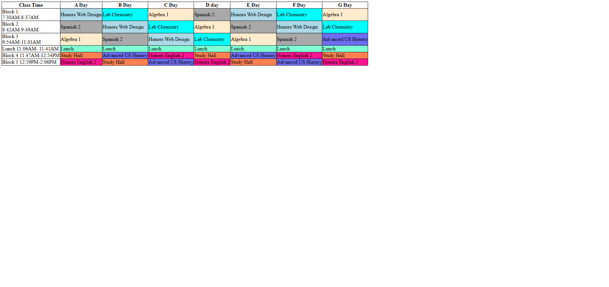
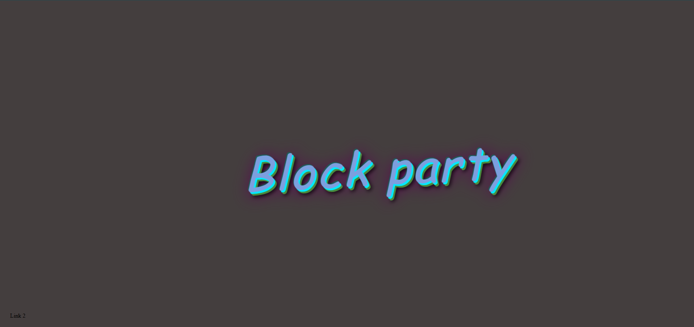
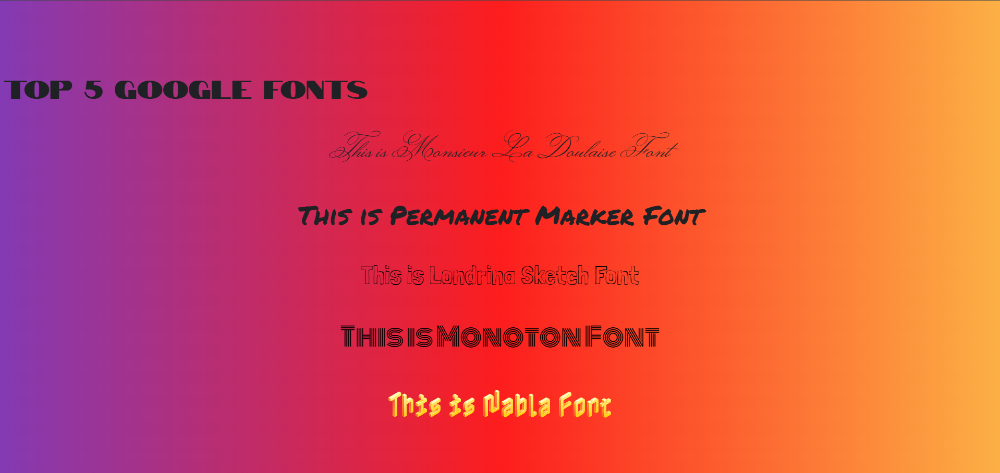
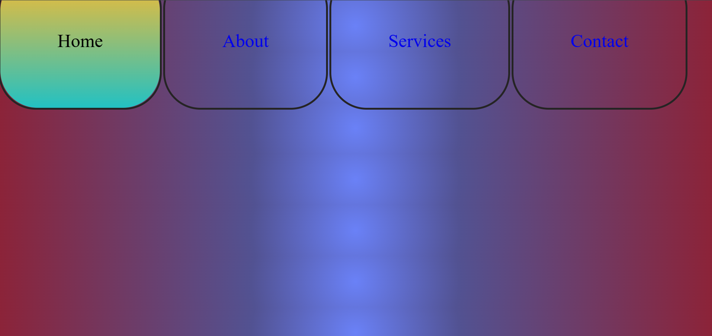
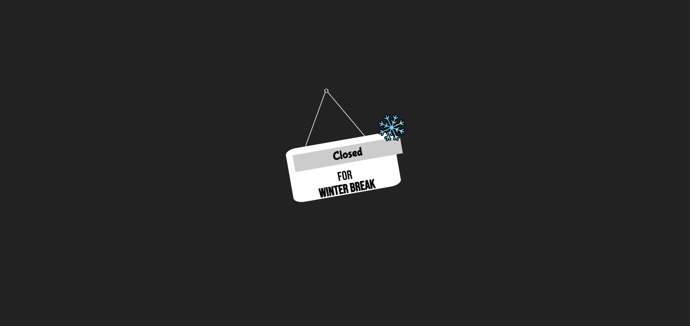
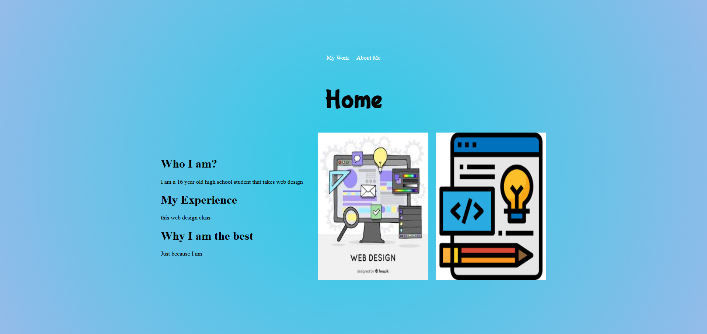
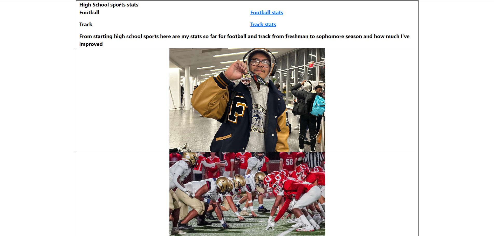
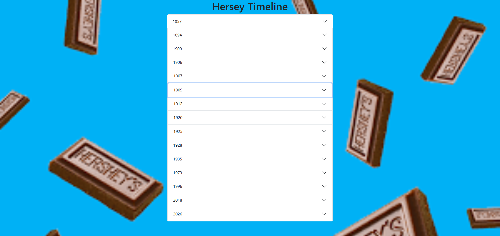
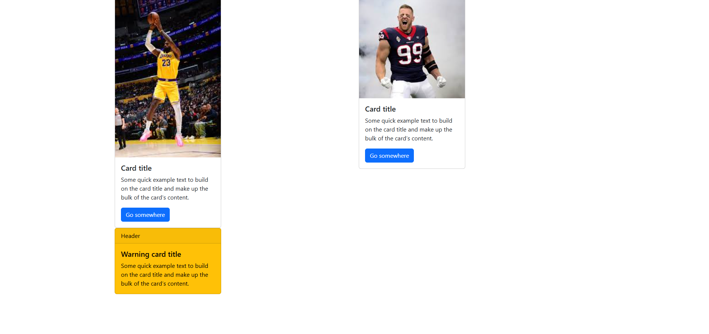

Emoji
My emoji website feels like a little extension of who I am—playful, expressive, and full of personality. Every color, icon, and tiny detail reflects the way I see the world: a mix of humor, creativity, and emotion. It’s more than just a collection of emojis; it’s a space where I can share my vibe with others and let people experience a piece of my perspective in a fun, visual way.
Here
School Schedule
My school schedule keeps my days structured and purposeful, balancing different subjects that challenge me in their own ways. Each class brings something new, whether it’s focusing on core academics or giving me a chance to be creative and think differently. Even though some days feel busy, the routine helps me stay organized and builds a steady rhythm that keeps me moving forward.
HereHalloween
My little ghost animation website feels like a fun and slightly spooky reflection of my creativity. The soft movements and playful ghost designs give it a lighthearted charm, showing my love for imagination and small details. It’s a space where I can bring simple ideas to life, turning something as tiny as a ghost into a unique and expressive experience.
Here
Own website
My personalized website, built entirely with graffiti-style coding, feels like a bold extension of my identity. The edgy visuals and unconventional design choices show my willingness to break the rules and create something original. It’s not just a website—it’s a digital canvas where I can mix creativity and code in a way that stands out and reflects my unique style.
Here
Google Fonts
My Google Font website showcases my eye for style and attention to detail, bringing together different typefaces in a way that feels uniquely mine. Each font choice reflects a different mood or personality, turning simple text into something expressive and visually interesting. It’s a creative space where I can experiment with design and show how even the smallest details—like lettering—can make a big impact.
Here
Style NavBar
My custom-styled navbar is a small detail that makes a big statement about my design sense. The way it’s laid out, colored, and animated shows my attention to user experience and my creativity in making something functional feel visually interesting. It ties my whole site together, reflecting my personal style while making navigation smooth and intuitive.
Here
Closedforbreak
My “closed for winter break” website has a calm, seasonal vibe that shows my creative side even when things are paused. The design captures that cozy, quiet feeling of winter, with thoughtful details that make it feel intentional rather than just inactive. It reflects how I like to keep things expressive and polished, even in moments of rest.
Here
Old portfolio
I’m someone who enjoys blending creativity with technology, using design and code to express ideas in unique ways. Through my projects, I like experimenting with different styles—from playful animations to bold, eye-catching layouts—while still keeping things functional and thoughtful. My work reflects my curiosity, attention to detail, and interest in creating digital experiences that feel personal and engaging.
Here
First Responsive Website
My first responsive website was a big step in my growth as a designer and developer. It taught me how to think beyond a single screen and create layouts that adapt smoothly across phones, tablets, and desktops. Seeing my work adjust and still look clean on different devices made the whole experience feel rewarding, and it showed me how important flexibility and user experience are in modern web design.
Here
Hersey Timeline
My Hershey timeline project highlights the story and growth of the Hershey brand in a visually engaging way. By organizing key moments into a clear, flowing design, I was able to turn history into something easy to explore and interesting to look at. It reflects my ability to combine research with creativity, making information both informative and visually appealing.
Here
Cards
I used Bootstrap cards on this website to display content in a structured and modern format. They are fully responsive and adapt smoothly to different devices for a better user experience.
Here
March Madness
This is my March Madness hub, where you can track the bracket, check game results, and follow every upset and highlight from the tournament. Get ready for nonstop basketball excitement!
Here